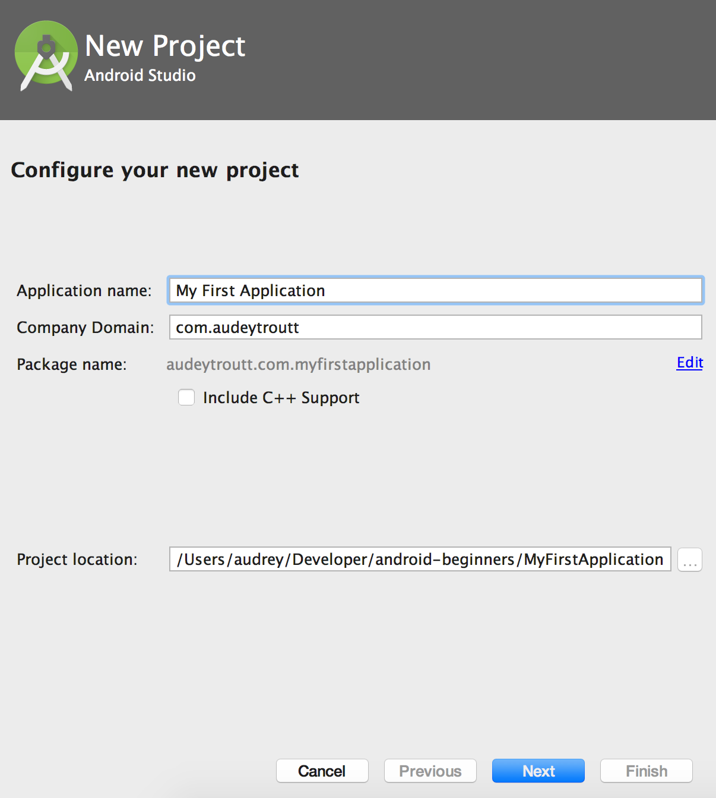
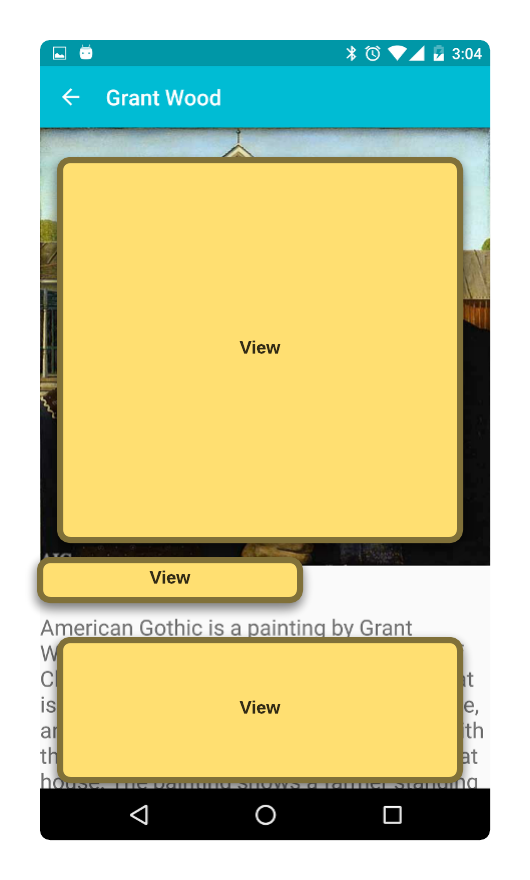
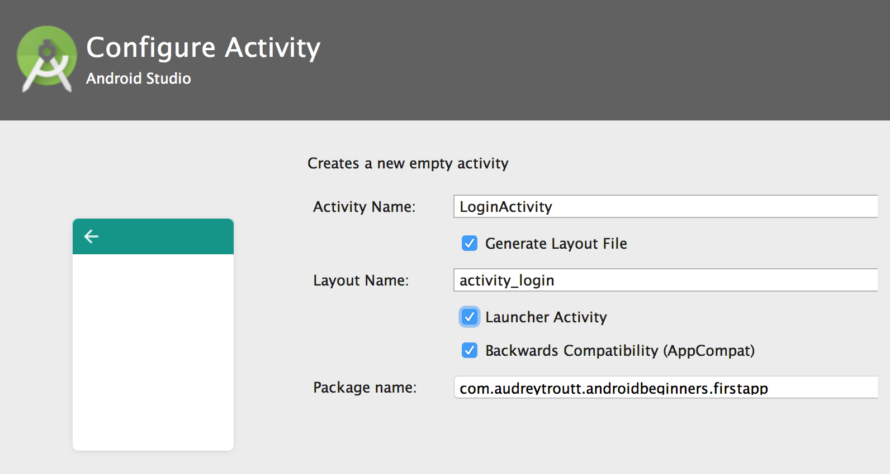

Android for Beginners
A practical introduction to app development on Android
Course source materials at on github.
Taught by Audrey Troutt / @auditty
Is this class for you?
You should be..
- curious and excited to learn about how apps are built.
- prepared to face challenges and have some fun along the way.
- already have some experience with programming concepts like variables, methods, classes, arrays, conditionals, and loops.
Before the first class
- Get a Google Account
- Install Android Studio
- Download the App Code
- Optional: Prep your Android device
- Bonus: learn about Java and Android
HINT: Press Down Arrow ↓ to navigate to the sub-sections below.
Google Account
If you have one, create one for free.
We are going to use this for logging in to the apps we will be creating.
Android Studio
If you don't have it already, download and install Android Studio.
This is the editor we will use to write our apps.
Download Android SDKs
Once Android Studio is installed, go to the Android SDK Manager inside Android Studio (Tools -> Android -> SDK Manager) and check two things:
- Under the "SDK Platforms" tab check that Android 7.0 (Nougat) API 24 is installed or download if needed.
- Then in the "SDK Tools" tab on that screen download the Support Repository / Android Support Repository if not already installed.
Get Code
Download the code for this class:
- Go to GitHub atroutt/android-beginners
- On the top right press "Clone or download" and click "Download ZIP"
- On your computer, open the zip files with your favorite unzip program and put the 'android-beginners' folder somewhere you can find it later. This repo contains the source for the app we will be using in this class in addition to these slides.

Optional: Prep your Android device
If you have an an Android phone enable developer options so that you can install and run your own apps.
An Android phone is not required for this course.
Bonus: Learn about Java and Android
If you just can't wait to get started, here's some resources to start learning now:
- Google's Android Training specifically, Building your First App (free)
- Udacity's Developing Android Apps (free)
- Udacity's How to use Git and Github (free)
- Head First Java, 2nd Edition by Kathy Sierra and Bert Bates
- Udemy's Java Tutorial for Complete Beginners (free)
HINT: This is the end of the section, press Right Arrow → to navigate to the next section.
Course Overview
- Running your first app
- Anatomy of an app
- APIs and authentication
- Cameras and photos
- Testing and Refactoring
HINT: Press ESC to enter the slide overview.
Please do
- Ask questions
- Be brave
- Take breaks
- Help each other out
Your first app
In this section you will learn how to create or import a new project into Android Studio, and build and run it on your device or emulator.
Tour of Android Studio
There's a lot to see and do in Android Studio. Let's take a brief tour of the parts we will use in this course.
Create a New App
Set the name and package for your app. Choose a project location or use the suggested directory.
Create a New App
Select Phone and Tablet and press Next
Create a New App
For now, select Empty Activity to start (it's the simplest) and press Next

Create a New App
Leave the default name and press Finish. Your app will be generated!
Create a New App
You should see this error-free code after Gradle, our build tool, finishes syncing.
Run your App
In the top menu choose "Run 'app'"
Android Studio is going to ask you to "Select Deployment Target" — this means choose the device you would like to run on
PRO TIP: Check the box that says "Use same device for future launches."
Hello World!
You should see this on your device!
Project 1: First Run
Import and run our class app for the first time.
Download App Code
If you haven't already,
download the source code for the first app (zip).
Alternatively, download the repo using git:
https://github.com/atroutt/android-beginners.gitImport Project
Launch Android studio
Choose to open an existing Android Studio Project (File -> New -> Import Project)
Choose the AndroidBeginnersFirstApp folder on your computer.
Gradle Sync
Before you can run your first app, you need to make sure you have all the dependencies downloaded. To do that select "Sync Project with Gradle Files" from the top menu bar. This may take a minute.
Run your App (!)
In the top menu choose "Run 'app'"
Android Studio is going to ask you to "Select Deployment Target" — this means choose the device you would like to run on
PRO TIP: Check the box that says "Use same device for future launches."
Project 1: First Run
If you can see this, then you are all set up!
Go ahead and snap a selfie!
Anatomy of an app
Now that you have been introduced to Android Studio, let's dissect an app!

Application
This is an app, also known as an Application
Application
Every app has one Application class

Activity
An app usually has many screens.
These are called Activities.
Activity
Here's a screen from our app. It is defined by an Activity class you'll see later.
View
An Activity usually has many views
View
An Activity usually has many views

But first
Just Enough Java
Just Enough Java
What does all this mean?
package com.audreytroutt.androidbeginners.firstapp;
import android.app.Application;
public class MyFirstApplication extends Application {
int toastLength = Toast.LENGTH_LONG;
@Override
public void onCreate() {
super.onCreate();
showToast("I have been created!");
}
public void showToast(String message) {
Toast.makeText(this, message, Toast.LENGTH_LONG).show();
}
}
Just Enough Java
What does all this mean?
package com.audreytroutt.androidbeginners.firstapp;
import android.app.Application; // import
public class MyFirstApplication extends Application { // class
int toastLength = Toast.LENGTH_LONG; // field
@Override
public void onCreate() { // method
super.onCreate();
showToast("I have been created!");
}
public void showToast(String message) { // method
Toast.makeText(this, message, Toast.LENGTH_LONG).show();
}
}
Just Enough Java
Anything after // is a comment in Java.
// This is a commentJust Enough Java
Every line of code must end with a semi-colon;
int numberOfErrors = 0;Just Enough Java
Most things in Java are object.
A class is the definition of an object in Java
// this is a class
public class MyFirstApplication extends Application {
// your fields and methods go in here
}All of your code goes inside of classes.
Just Enough Java
A method defines the behavior of your class.
Everything your app does will be defined inside of methods inside of classes.
public void showToast(String message) { // this is a method
Toast.makeText(this, message, toastLength).show();
}
Just Enough Java
A field holds some data for your object.
public class MyFirstApplication extends Application {
int toastLength; // this is a field
public void showToast(String message) {
Toast.makeText(this, message, toastLength).show();
}
}
PRO TIP: always put your fields at the top of your class, above any methods.
Just Enough Java
Up at the top above the class body there are two things you will see: the package and import declarations.
package com.audreytroutt.androidbeginners.firstapp;
import android.app.Application;
import android.widget.Toast;
import java.util.Date;
package is like a folder path to your class--it will be auto-generated for you.
import is used to include other code into your class.
Anatomy of an App (Continued)
Let's dissect an app!
Application
This is an app, also known as an Application
Application
Your application is always represented in your Application's Manifest, AndroidManifest.xml.
Application
The Android Manifest is an XML file that declares things like the name of your Application, what Activities it includes, and which Activity should be displayed on launch.
<?xml version="1.0" encoding="utf-8"?>
<manifest xmlns:android="http://schemas.android.com/apk/res/android"
package="com.audreytroutt.androidbeginners.firstapp">
<application
android:allowBackup="true"
android:icon="@mipmap/ic_launcher"
android:label="@string/app_name"
android:supportsRtl="true"
android:theme="@style/AppTheme"
android:name=".MyFirstApplication">
<activity
android:name=".MainActivity"
android:label="Welcome to the First App!"
android:theme="@style/AppTheme.NoActionBar">
<intent-filter>
<action android:name="android.intent.action.MAIN" />
<category android:name="android.intent.category.LAUNCHER" />
</intent-filter>
</activity>
<activity
android:name=".PaintingListActivity"
android:label="Paintings (List)"
android:parentActivityName=".MainActivity">
</activity>
<activity
android:name=".PaintingDetailActivity"
android:parentActivityName=".MainActivity">
</activity>
</application>
</manifest>
Application
An instance of your Application class is created when your app launches and sticks around until your app is stopped.
You are not required to create your own Application class implementation. There is a default that works well enough for simple use cases.
Application
If you do create your own implementation it has to extend android.app.Application. It will look something like this:
package com.audreytroutt.androidbeginners.firstapp;
import android.app.Application;
public class MyFirstApplication extends Application {
@Override
public void onCreate() {
super.onCreate();
// At this point my first application was just created
}
}
Activity
As we learned earlier, an app can have many Activities.
Activity
Here's a screen from our app.
Activity
Activities are registered in your Application Manifest
Here you can see three Activities for my app.
<?xml version="1.0" encoding="utf-8"?>
<manifest xmlns:android="http://schemas.android.com/apk/res/android"
package="com.audreytroutt.androidbeginners.firstapp">
<application
android:allowBackup="true"
android:icon="@mipmap/ic_launcher"
android:label="@string/app_name"
android:supportsRtl="true"
android:theme="@style/AppTheme"
android:name=".MyFirstApplication">
<!-- Here's the first Activity -->
<activity
android:name=".MainActivity"
android:label="Welcome to the First App!"
android:theme="@style/AppTheme.NoActionBar">
<intent-filter>
<action android:name="android.intent.action.MAIN" />
<category android:name="android.intent.category.LAUNCHER" />
</intent-filter>
</activity>
<activity
android:name=".PaintingListActivity"
android:label="Paintings (List)"
android:parentActivityName=".MainActivity">
</activity>
<activity
android:name=".PaintingDetailActivity"
android:parentActivityName=".MainActivity">
</activity>
</application>
</manifest>
Activity
Let's take a look at our MainActivity.

HINT: The name MainActivity can be anything you want. It's only by convention that the name has "Activity" in it. The only requirement is that the class extends Activity.
MainActivity
Inside an Activity class you again see an onCreate method. This is often where you set up what is displayed on the screen.
public class MainActivity extends AppCompatActivity implements NavigationView.OnNavigationItemSelectedListener {
@Override
protected void onCreate(Bundle savedInstanceState) {
super.onCreate(savedInstanceState);
setContentView(R.layout.activity_main);
Toolbar toolbar = (Toolbar) findViewById(R.id.toolbar);
setSupportActionBar(toolbar);
FloatingActionButton fab = (FloatingActionButton) findViewById(R.id.fab);
fab.setOnClickListener(new View.OnClickListener() {
@Override
public void onClick(View view) {
Snackbar.make(view, "Hello, Test!", Snackbar.LENGTH_LONG)
.setAction("Action", null).show();
}
});
DrawerLayout drawer = (DrawerLayout) findViewById(R.id.drawer_layout);
ActionBarDrawerToggle toggle = new ActionBarDrawerToggle(
this, drawer, toolbar, R.string.navigation_drawer_open, R.string.navigation_drawer_close);
drawer.setDrawerListener(toggle);
toggle.syncState();
NavigationView navigationView = (NavigationView) findViewById(R.id.nav_view);
navigationView.setNavigationItemSelectedListener(this);
}
@Override
public void onBackPressed() {
DrawerLayout drawer = (DrawerLayout) findViewById(R.id.drawer_layout);
if (drawer.isDrawerOpen(GravityCompat.START)) {
drawer.closeDrawer(GravityCompat.START);
} else {
super.onBackPressed();
}
}
@Override
public boolean onCreateOptionsMenu(Menu menu) {
// Inflate the menu; this adds items to the action bar if it is present.
getMenuInflater().inflate(R.menu.main, menu);
return true;
}
@Override
public boolean onOptionsItemSelected(MenuItem item) {
// Handle action bar item clicks here. The action bar will
// automatically handle clicks on the Home/Up button, so long
// as you specify a parent activity in AndroidManifest.xml.
int id = item.getItemId();
//noinspection SimplifiableIfStatement
if (id == R.id.action_settings) {
return true;
}
return super.onOptionsItemSelected(item);
}
@Override
public boolean onNavigationItemSelected(MenuItem item) {
// Handle navigation view item clicks here.
int id = item.getItemId();
if (id == R.id.nav_camera) {
// Handle the camera action
} else if (id == R.id.nav_list) {
Intent listIntent = new Intent(this, PaintingListActivity.class);
startActivity(listIntent);
}
DrawerLayout drawer = (DrawerLayout) findViewById(R.id.drawer_layout);
drawer.closeDrawer(GravityCompat.START);
return true;
}
}
Activity Lifecycle

From developer.android.com/reference/android/app/Activity.html#ProcessLifecycle
MainActivity
There will also be methods for any of the actions that can be taken with the views (buttons, toggles, menus, etc.) on the screen.
@Override
public void onBackPressed() {
DrawerLayout drawer = (DrawerLayout) findViewById(R.id.drawer_layout);
if (drawer.isDrawerOpen(GravityCompat.START)) {
drawer.closeDrawer(GravityCompat.START);
} else {
super.onBackPressed();
}
}
@Override
public boolean onNavigationItemSelected(MenuItem item) {
int id = item.getItemId();
if (id == R.id.nav_camera) {
} else if (id == R.id.nav_list) {
Intent listIntent = new Intent(this, PaintingListActivity.class);
startActivity(listIntent);
}
DrawerLayout drawer = (DrawerLayout) findViewById(R.id.drawer_layout);
drawer.closeDrawer(GravityCompat.START);
return true;
}Intent
Now we can talk about how you navigate between Activities: Intents!
Intent
Navigating between Activities is done with the use of Intents, like this:
Intent listIntent = new Intent(this, PaintingListActivity.class);
startActivity(listIntent);An Intent is a message to the Android operating system that we'd like to start the Activity named in the Intent.
HINT: Intents can only be created with a "context", which for us means an Activity. The startActivity method is defined for us in the Activity base class that we extend.
Intent
Intents are useful for more than switching between screens. They are the way to kick off all sorts of actions from your app:
- making calls
- viewing contacts
- picking files/images
- snapping images with the camera
- social sharing
- ...and more!
Reference: common intents
Email Intent
Here's an example of a method that creates an intent to send an email:
public void composeEmail(String[] addresses, String subject) {
Intent intent = new Intent(Intent.ACTION_SENDTO);
intent.setData(Uri.parse("mailto:")); // only email apps
intent.putExtra(Intent.EXTRA_EMAIL, addresses);
intent.putExtra(Intent.EXTRA_SUBJECT, subject);
if (intent.resolveActivity(getPackageManager()) != null) {
startActivity(intent);
}
}Capture Photo Intent
Here's an example of a method that creates an intent to capture a photo with the camera app:
static final int REQUEST_IMAGE_CAPTURE = 1;
private void dispatchTakePictureIntent() {
Intent takePictureIntent = new Intent(MediaStore.ACTION_IMAGE_CAPTURE);
if (takePictureIntent.resolveActivity(getPackageManager()) != null) {
startActivityForResult(takePictureIntent, REQUEST_IMAGE_CAPTURE);
}
}Capture Photo Intent Result
When you call startActivityForResult you have to pass a code that you can use to match the response with your request.
@Override
protected void onActivityResult(int requestCode, int resultCode, Intent data) {
if (requestCode == CAPTURE_IMAGE_ACTIVITY_REQUEST_CODE && resultCode == RESULT_OK) {
// A picture was just taken, let's display that in our image view
editImage();
updateMainImageFromFile();
}
}Project 2: Connect the Screens
Head over to Android Studio for our second project.
Project 2: Connect the Screens
For this project, your goal is to create intents so that each of the menu items in the drawer lead to the correct screens. Open MainActivity and find onNavigationItemSelected
- nav_camera should fire a Capture Photo Intent. NOTE: I have already implemented the onActivityResult with the code CAPTURE_IMAGE_ACTIVITY_REQUEST_CODE
- nav_list should display the PaintingListActivity
- nav_grid should display the PaintingGridActivity
- nav_web should take you to this website
- nav_share should fire a social share Intent
- nav_send should open an email Intent
HINT: You can either try to figure those out from the previous lessons, or from the Android docs, or continue down for some copy and paste code snippets.
nav_camera
nav_camera should fire a Capture Photo Intent
if (id == R.id.nav_camera) {
// TODO Project 2: create an intent for the MediaStore.ACTION_IMAGE_CAPTURE
Intent intent = new Intent(MediaStore.ACTION_IMAGE_CAPTURE);
intent.putExtra(MediaStore.EXTRA_OUTPUT, getAndroidBeginnerImageUri()); // set the image file name
startActivityForResult(intent, CAPTURE_IMAGE_ACTIVITY_REQUEST_CODE);
}nav_list
nav_list should display the PaintingListActivity
} else if (id == R.id.nav_list) {
// TODO Project 2: create an intent for the PaintingListActivity
Intent listIntent = new Intent(this, PaintingListActivity.class);
startActivity(listIntent);
}nav_grid
nav_grid should display the PaintingGridActivity. This is just like nav_list, but with a different class--see if you can figure this out!
nav_web
nav_web should take you to this website
} else if (id == R.id.nav_web) {
// TODO Project 2: create an intent to open a url
Uri webpage = Uri.parse("http://audreytroutt.com/android-beginners/");
Intent intent = new Intent(Intent.ACTION_VIEW, webpage);
if (intent.resolveActivity(getPackageManager()) != null) {
startActivity(intent);
}
}nav_share
nav_share should fire a social share Intent
I've already implemented a shareAction() method because I need it for the Floating Action Button (FAB).
} else if (id == R.id.nav_share) {
// TODO Project 2: create an intent to social share about this app
shareAction();
}nav_send
nav_send should open an email Intent
} else if (id == R.id.nav_send) {
// TODO Project 2: create an intent to send an email
Intent intent = new Intent(Intent.ACTION_SENDTO);
intent.setData(Uri.parse("mailto:")); // only email apps should handle this
intent.putExtra(Intent.EXTRA_EMAIL, new String[] { "gdiandroidbeginners@mailinator.com"});
intent.putExtra(Intent.EXTRA_SUBJECT, "Testing out my Email Intent -- Success!");
if (intent.resolveActivity(getPackageManager()) != null) {
startActivity(intent);
}
}APIs and Authentication
Most of the code that makes apps work isn't code you write yourself--instead we use libraries.
A library will provide an API for implementing the features you need.
API stands for Application Program Interface, and it means the classes and methods that you need to use to leverage all this code that other people wrote.
Dependencies
Dependencies are libraries that your project needs to work.
You can add libraries manually by putting a copy of the library (usually a .jar or .aar file) in your project and instructing the gradle build script to include this file when it builds your app.
Or, you can use a dependency management system, like gradle, to automatically download and include the required libraries into your app.
build.gradle
Gradle is both our build tool and our dependency managment system. The build.gradle script gives instructions for how to build the app and which dependencies to download and include.
apply plugin: 'com.android.application'
android {
compileSdkVersion 24
buildToolsVersion "24.0.3"
defaultConfig {
applicationId "com.audreytroutt.androidbeginners.firstapp"
minSdkVersion 16
targetSdkVersion 24
versionCode 1
versionName "1.0"
}
buildTypes {
release {
minifyEnabled false
proguardFiles getDefaultProguardFile('proguard-android.txt'), 'proguard-rules.pro'
}
}
}
dependencies {
compile fileTree(dir: 'libs', include: ['*.jar'])
testCompile 'junit:junit:4.12'
// Support libraries
compile 'com.android.support:appcompat-v7:24.2.1'
compile 'com.android.support:design:24.2.1'
compile 'com.android.support:cardview-v7:24.2.1'
compile 'com.android.support:support-v4:24.2.1'
// picasso
compile 'com.squareup.picasso:picasso:2.5.2'
// TODO Project 3: add the firebase auth dependencies here
}Using Libraries
Once you've added a library to your project, you need to know how to use it. There are four kinds of documentation for most libraries:
- Getting Started Instructions
- Formal API Documentation
- Feature Usage Guides
- Sample apps
Getting Started Instructions
Getting started instructions usually tell you how to get the library and maybe how to initialize the main class.

Formal API Documentation
Formal API documentation will list every class, method, and field in the API. Often these are in javadoc format.
Feature Usage Guides
Feature usage guides give you step by step instructions for how to use a specific feature of the API.

Sample Apps
Sample apps are helpful because you can see a working example of the API.

How Authentication Works
When we use an authentication service there are typically three steps:
- Send request for authentication using API
- Receive success token or failure response from auth service
- (Optional) Request additional user info with success token
How Authentication Works
Firebase
Firebase is a service that can do authentication AND store data.
Rather than forcing your app users to remember a new username and password you can let them log in with Google instead.
You can authenticate with Google and then use the Google success token to authenticate with Firebase.
Project 3: Google Login with Firebase
For this project, your goal is to add a login screen to our app.
We are going to use Google to log in so that we don't have to remember any usernames or passwords.
Authentication
Let's add a login screen to our app to learn more about who is using the app.
Reference: Using Firebase Auth
Add Firebase and Google Auth Libraries
Add the following dependencies to your app's build.gradle file inside the dependencies{...} section
dependencies {
// ...
// TODO Project 3: add the firebase auth dependencies here
compile 'com.google.firebase:firebase-core:9.8.0'
compile 'com.google.firebase:firebase-auth:9.8.0'
compile 'com.google.android.gms:play-services-auth:9.8.0'
}HINT: There are two build.gradle files for your project. One is labled "Module" and the other "Project". The Module one is the one we want to edit.
Add Firebase and Google Auth Libraries
Add the following line to your app's build.gradle file outside the dependencies{...} section at the bottom of the file.
// Add to the bottom of the file outside of dependencies
apply plugin: 'com.google.gms.google-services'HINT: Always sync gradle after editing build.gradle. Android Studio will remind you.
Create Login Activity
Go to File->New->Activity and choose "Empty Activity"
Edit your Manifest.xml
Remove the launch intent filter from MainActivity.
<activity
android:name=".MainActivity"
android:label="Android Beginners"
android:theme="@style/AppTheme.NoActionBar">
<!-- TODO Project 3: Remove this intent when you add the LoginActivity -->
<intent-filter>
<action android:name="android.intent.action.MAIN" />
<category android:name="android.intent.category.LAUNCHER" />
</intent-filter>
</activity>Edit your Manifest.xml
Check that your LoginActivity looks like this:
<activity
android:name=".LoginActivity"
android:label="@string/app_name">
<intent-filter>
<action android:name="android.intent.action.MAIN" />
<category android:name="android.intent.category.LAUNCHER" />
</intent-filter>
</activity>
Set Up Login Activity layout
Open activity_login.xml and replace it's contents with this layout.
<FrameLayout xmlns:android="http://schemas.android.com/apk/res/android"
xmlns:tools="http://schemas.android.com/tools"
android:layout_width="match_parent"
android:layout_height="match_parent"
tools:context="com.audreytroutt.androidbeginners.firstapp.LoginActivity">
<ImageView
android:layout_width="match_parent"
android:layout_height="match_parent"
android:src="@drawable/cell_bg"
android:contentDescription="@string/background_image_description"
android:scaleType="fitXY"/>
<LinearLayout
android:layout_width="match_parent"
android:layout_height="match_parent"
android:paddingBottom="@dimen/activity_vertical_margin"
android:paddingLeft="@dimen/activity_horizontal_margin"
android:paddingRight="@dimen/activity_horizontal_margin"
android:paddingTop="@dimen/activity_vertical_margin"
android:gravity="center_horizontal"
android:orientation="vertical"
android:layout_gravity="center_horizontal">
<com.google.android.gms.common.SignInButton
android:id="@+id/sign_in_button"
android:layout_width="wrap_content"
android:layout_height="wrap_content"
android:gravity="center"
android:layout_gravity="center_horizontal" />
<TextView
android:id="@+id/logged_in_name"
android:layout_width="match_parent"
android:layout_height="match_parent"
android:layout_gravity="center"
android:textSize="40sp"/>
</LinearLayout>
</FrameLayout>Set up the Sign In Button
Findy your LoginActivity onCreate method and set up a reference to your sign in button.
public class LoginActivity extends AppCompatActivity {
private TextView mStatusTextView;
private SignInButton mSignInButton;
@Override
protected void onCreate(Bundle savedInstanceState) {
super.onCreate(savedInstanceState);
setContentView(R.layout.activity_login);
mSignInButton = (SignInButton) findViewById(R.id.sign_in_button);
mSignInButton.setSize(SignInButton.SIZE_WIDE);
mStatusTextView = (TextView) findViewById(R.id.logged_in_name);
}
}Set up Google Auth in OnCreate
public class LoginActivity extends AppCompatActivity implements GoogleApiClient.OnConnectionFailedListener {
// ...
private GoogleApiClient mGoogleApiClient;
@Override
protected void onCreate(Bundle savedInstanceState) {
super.onCreate(savedInstanceState);
setContentView(R.layout.activity_login);
// ... other stuff you already set up
// Set up Google Auth and request basic user profile data and email
GoogleSignInOptions gso = new GoogleSignInOptions.Builder(GoogleSignInOptions.DEFAULT_SIGN_IN)
.requestIdToken(getString(R.string.default_web_client_id))
.requestEmail()
.build();
mGoogleApiClient = new GoogleApiClient.Builder(this)
.enableAutoManage(this, this)
.addApi(Auth.GOOGLE_SIGN_IN_API, gso)
.build();
}
@Override
public void onConnectionFailed(@NonNull ConnectionResult connectionResult) {
Log.d(TAG, "onConnectionFailed:" + connectionResult.getErrorMessage());
}
}Set up Firebase Auth in OnCreate
Inside onCreate also set up Firebase Authentication.
// ...
private FirebaseAuth mAuth;
private FirebaseAuth.AuthStateListener mAuthListener;
private static final String TAG = "LoginActivity";
@Override
protected void onCreate(Bundle savedInstanceState) {
super.onCreate(savedInstanceState);
setContentView(R.layout.activity_login);
// ... other stuff you already set up
// Set up Firebase Auth
mAuth = FirebaseAuth.getInstance();
mAuthListener = new FirebaseAuth.AuthStateListener() {
@Override
public void onAuthStateChanged(@NonNull FirebaseAuth firebaseAuth) {
FirebaseUser user = firebaseAuth.getCurrentUser();
if (user != null) {
// User is signed in
Log.d(TAG, "onAuthStateChanged:signed_in:" + user.getUid());
} else {
// User is signed out
Log.d(TAG, "onAuthStateChanged:signed_out");
}
}
};
}Add onStart and onStop
We only want to listen for authentication while the login activity is visible.
Add these methods inside your LoginActivity, after onCreate.
@Override
public void onStart() {
super.onStart();
mAuth.addAuthStateListener(mAuthListener);
}
@Override
public void onStop() {
super.onStop();
if (mAuthListener != null) {
mAuth.removeAuthStateListener(mAuthListener);
}
}Listen for button presses
Make Your LoginActivity the listener for the sign in button and implement an onClick method.
// # 1 ADD IMPLEMENTS OnClickListener
public class LoginActivity extends AppCompatActivity implements GoogleApiClient.OnConnectionFailedListener, OnClickListener {
@Override
protected void onCreate(Bundle savedInstanceState) {
// ...
// # 3 setOnClickListener
mSignInButton.setOnClickListener(this);
// ...
}
// # 2 ADD onClick
@Override
public void onClick(View v) {
if (R.id.sign_in_button == v.getId()) {
Toast.makeText(this, "Sign In Button was pressed", Toast.LENGTH_LONG).show();
}
}
}Sign In on Button Press
Use an intent! This starts a Google Auth activity.
@Override
public void onClick(View v) {
if (R.id.sign_in_button == v.getId()) {
Intent signInIntent = Auth.GoogleSignInApi.getSignInIntent(mGoogleApiClient);
startActivityForResult(signInIntent, RC_SIGN_IN);
}
}Handle Google Login response
When the Google auth is done it will call back to our LoginActivity onActivityResult method. If successful we want to tell Firebase who you are.
private static final int RC_SIGN_IN = 111;
// ...
@Override
public void onActivityResult(int requestCode, int resultCode, Intent data) {
super.onActivityResult(requestCode, resultCode, data);
// 1. if the result is for our sign in request
if (requestCode == RC_SIGN_IN) {
GoogleSignInResult result = Auth.GoogleSignInApi.getSignInResultFromIntent(data);
if (result.isSuccess()) {
// 2. if Google Sign In was successful, get the Google account
GoogleSignInAccount account = result.getSignInAccount();
// 3. Display the welcome text on the LoginActivity status text view
String text = getResources().getString(R.string.welcome_on_login, account.getDisplayName());
mStatusTextView.setText(text);
// 4. Hide the sign in button so that you can't sign in again
mSignInButton.setVisibility(View.INVISIBLE);
// 5. Tell Firebase to login with this Google account (this method won't exist until you create it in the next step!)
firebaseAuthWithGoogle(account);
} else {
// 6. Google Sign In failed, update status message
mStatusTextView.setText("Login Failed");
}
}
}Create the missing method
Use Android Studio to automatically create the missing method, firebaseAuthWithGoogle. Add the following implementation:
private void firebaseAuthWithGoogle(final GoogleSignInAccount acct) {
Log.d(TAG, "firebaseAuthWithGoogle:" + acct.getId());
AuthCredential credential = GoogleAuthProvider.getCredential(acct.getIdToken(), null);
mAuth.signInWithCredential(credential).addOnCompleteListener(this, new OnCompleteListener<AuthResult>() {
@Override
public void onComplete(@NonNull Task<AuthResult> task) {
Log.d(TAG, "signInWithCredential:onComplete:" + task.isSuccessful());
if (!task.isSuccessful()) {
// Firebase login failed even though Google login was successful
Log.w(TAG, "signInWithCredential", task.getException());
Toast.makeText(LoginActivity.this, "Authentication failed.", Toast.LENGTH_SHORT).show();
mSignInButton.setVisibility(View.VISIBLE);
} else {
// Firebase login successful
FirebaseUser user = FirebaseAuth.getInstance().getCurrentUser();
UserProfileChangeRequest profileUpdates = new UserProfileChangeRequest.Builder()
.setDisplayName(acct.getDisplayName())
.setPhotoUri(acct.getPhotoUrl())
.build();
user.updateProfile(profileUpdates).addOnCompleteListener(new OnCompleteListener<Void>() {
@Override
public void onComplete(@NonNull Task<Void> task) {
if (task.isSuccessful()) {
// We are all done authenticating with Firebase
// TODO show the MainActivity! Do you remember how to create an intent and call startActivity?
}
}
});
}
}
});
}Google Debug Certificate
In order to use Google Login you need to add your debug certificate fingerprint to our Firebase account.
Follow these instructions to get your SHA-1 developer fingerprint. It will look something like this:
SHA1: DA:39:A3:EE:5E:6B:4B:0D:32:55:BF:EF:95:60:18:90:AF:D8:07:09Now you can log in!
Run the app and try logging in with Google!
BONUS: Update User In Drawer
In MainActivity find setUserInfoInDrawer and add the following implementation:
private void setUserInfoInDrawer() {
// TODO Project 3: Get user info and display it at the top of the drawer
FirebaseUser user = FirebaseAuth.getInstance().getCurrentUser();
if (user != null) {
NavigationView navigationView = (NavigationView) findViewById(R.id.nav_view);
View headerView = navigationView.getHeaderView(0);
TextView currentUserEmail = (TextView) headerView.findViewById(R.id.current_user_email);
currentUserEmail.setText(user.getEmail());
TextView currentUserName = (TextView) headerView.findViewById(R.id.current_user_name);
currentUserName.setText(user.getDisplayName());
ImageView currentUserImage = (ImageView) headerView.findViewById(R.id.current_user_photo);
Picasso.with(this).load(user.getPhotoUrl()).into(currentUserImage);
}
}BONUS: Sign Out
It's nice to be able to sign out too! We will need to set up a Google API Client in MainActivity.
public class MainActivity extends AppCompatActivity implements NavigationView.OnNavigationItemSelectedListener, GoogleApiClient.OnConnectionFailedListener {
// ...
private GoogleApiClient mGoogleApiClient;
@Override
protected void onCreate(Bundle savedInstanceState) {
super.onCreate(savedInstanceState);
setContentView(R.layout.activity_main);
// ... other stuff you already set up
// Set up Google Auth and request basic user profile data and email
GoogleSignInOptions gso = new GoogleSignInOptions.Builder(GoogleSignInOptions.DEFAULT_SIGN_IN)
.requestIdToken(getString(R.string.default_web_client_id))
.requestEmail()
.build();
mGoogleApiClient = new GoogleApiClient.Builder(this)
.enableAutoManage(this, this)
.addApi(Auth.GOOGLE_SIGN_IN_API, gso)
.build();
}
@Override
public void onConnectionFailed(@NonNull ConnectionResult connectionResult) {
Log.d(TAG, "onConnectionFailed:" + connectionResult.getErrorMessage());
}
}BONUS: Sign Out
I've already added a Sign Out menu in the top right of the screen. Find onOptionsItemSelected in MainActivity to implement Sign Out:
if (id == R.id.action_sign_out) {
// TODO Project 3: implement sign out
Auth.GoogleSignInApi.signOut(mGoogleApiClient).setResultCallback(new ResultCallback<Status>() {
@Override
public void onResult(Status status) {
if (status.isSuccess()) {
Intent loginScreenIntent = new Intent(MainActivity.this, LoginActivity.class);
startActivity(loginScreenIntent);
}
}
});
return true;
}Camera and Photos
We already learned how to wire up a photo intent in the second project. There's more fun to be had with images, like editing them!
Bitmap
On Android, images are loaded into memory as Bitmaps
Bitmap bmp = BitmapFactory.decodeFile(getAndroidBeginnerImageUri().getPath(), null);Bitmap
A bitmap is a representation of the image as a grid of pixels.
Canvas and Paint
You can edit your Bitmap by creating a Canvas and some Paint.
Just like good old MS Paint you can switch colors and draw different shapes, all with code!
Bitmap bitmap = Bitmap.createBitmap(300, 300, null);
Canvas canvas = new Canvas(bitmap);
Paint paint = new Paint();
paint.setColor(Color.WHITE);
canvas.drawCircle(150, 150, 50, paint);Paint Coordinates
The pixels are numbered by their x and y coordinates on the grid. With 0,0 at the top left.
X increases as you move to the right and Y increases as you move to the bottom.
Paint Coordinates
Most shapes are drawn from the top left, but when drawing text on a bitmap by default text is drawn from the bottom left of the text (not the top left!).

HINT: The bottom of the text is known as the baseline of the text. The tails of letters like y and g hang down below the baseline, so make room for them when placing your text.
Project 4: Image Editing
For this project, your goal is to update the snapped photo to add the words "Android Developer" on top.
MainActivity
In MainActivity look for the method editImage and your TODO comment there
private void editImage() {
if (!isStoragePermissionGranted()) {
requestWriteExternalStoragePermission();
}
// Load the image into memory from the file
Bitmap bmp = BitmapFactory.decodeFile(getAndroidBeginnerImageUri().getPath(), null);
// Square up the image from the camera
int croppedImageSize = (int)Math.min(bmp.getWidth(), bmp.getHeight());
Bitmap cropped = centerCropBitmapToSquareSize(bmp, croppedImageSize);
// TODO Project 4: Draw text on the cropped image
// Finally, save the edited image back to the file
saveBitmapToFile(cropped);
}
Canvas and Paint
Create a Canvas from your bitmap--this is how you can "paint" on your image. Create a Paint object too!
Canvas canvas = new Canvas(cropped);
Paint paint = new Paint();Configure your Paint
Set the size and color of the text that we want to write on the image
// I want the text to be about 1/10 as tall as the image
final int textSize = croppedImageSize / 10;
paint.setTextSize(textSize);
paint.setColor(ResourcesCompat.getColor(getResources(), R.color.colorPrimaryDark, null));Calculate text position
You will need to tell your Paint where to draw the text on the image in terms of X and Y position.
X is the horizontal position of the text, relative to the left side. Y is the vertical position of the text, measured as how far the BOTTOM of the text is from the top of the image.
// it works out to start the text about 1/10 of the way into the image from the left, which is the same as our text size.
final int textXPosition = textSize;
// I want the text to be a little above the bottom of the image
final int textYPosition = croppedImageSize - (textSize / 2);Draw the text!
Now that your paint and variables are configured you can draw the text to your canvas! Drawing on the canvas updates the image.
final String label = getString(R.string.android_developer_image_label);
canvas.drawText(label, textXPosition, textYPosition, paint);HINT: if you want the text to stand out a little more, try adding a shadow layer to your Paint BEFORE you draw the text. Check out paint.setShadowLayer(...)
Save the edited image
Make sure that the call to save the edited bitmap is AFTER you are done painting on your canvas so that your changes will be there the next time you run the app.
// Save the edited image back to the file
saveBitmapToFile(cropped);Success!
The next time you snap an image you should see your text added on top. Share that with your friends!

Want to do more?
There are infinite ways you can edit images. Check out the Canvas and Paint clases for ideas or try these:
Testing
Android tests are based off of JUnit. There are two kinds of tests: unit tests and instrumented tests.
Create Test Directories
Normally when you create a new project Android Studio will create the unit test and instrumented test directories for you, but I have deleted them!
Switch to Project view in the Project Tool on the left and create test/java and androidTest/java under app/src
Create Unit Test Class
Cmd+click (Mac) or Ctrl+click (Windows) on test/java and Select New... -> Java Class.
Create FirstTest in package com.audreytroutt.androidbeginners.firstapp
Create Test Class
Paste in this implementation
package com.audreytroutt.androidbeginners.firstapp;
import org.junit.Test;
import static org.hamcrest.CoreMatchers.is;
import static org.junit.Assert.assertEquals;
import static org.junit.Assert.assertThat;
import static org.junit.Assert.assertTrue;
public class FirstTest {
@Test
public void trueIsTrue() {
assertThat(true, is(true));
assertEquals(true, true);
assertTrue(true);
}
@Test
public void falseIsFalse() {
assertThat(false, is(false));
assertEquals(false, false);
assertFalse(false);
}
}Unit Test Dependencies
We already have the junit 4.12 dependency in our project
dependencies {
...
testCompile 'junit:junit:4.12'
...
}Run the Unit Test
Cmd+click (Mac) or Ctrl+click (Windows) on FirstTest and select Run 'FirstTest'
Test Results
Down in the Run tool, you should see the results of your tests
Create Integrated Test
Cmd+click (Mac) or Ctrl+click (Windows) on androidTest/java and Select New... -> Java Class and create MainActivityTest in package com.audreytroutt.androidbeginners.firstapp
Unit Test Dependencies
We need to add several dependencies to build Integrated Tests
dependencies {
...
// for Instrumented Tests
androidTestCompile 'com.android.support:support-annotations:24.2.1'
androidTestCompile 'com.android.support.test:runner:0.5'
androidTestCompile 'com.android.support.test:rules:0.5'
androidTestCompile('com.android.support.test.espresso:espresso-core:2.2.2', {
exclude group: 'com.android.support', module: 'support-annotations'
})
androidTestCompile('com.android.support.test.espresso:espresso-contrib:2.2.2', {
exclude group: 'com.android.support', module: 'appcompat-v7'
exclude group: 'com.android.support', module: 'support-v4'
exclude group: 'com.android.support', module: 'recyclerview-v7'
exclude group: 'com.android.support', module: 'design'
})
...
}Create Integrated Test
Paste in this implementation
package com.audreytroutt.androidbeginners.firstapp;
import android.support.test.filters.LargeTest;
import android.support.test.rule.ActivityTestRule;
import android.support.test.runner.AndroidJUnit4;
import org.junit.Rule;
import org.junit.Test;
import org.junit.runner.RunWith;
import static android.support.test.espresso.Espresso.onView;
import static android.support.test.espresso.action.ViewActions.click;
import static android.support.test.espresso.assertion.ViewAssertions.matches;
import static android.support.test.espresso.contrib.DrawerActions.open;
import static android.support.test.espresso.matcher.ViewMatchers.isDisplayed;
import static android.support.test.espresso.matcher.ViewMatchers.withId;
import static android.support.test.espresso.matcher.ViewMatchers.withText;
@RunWith(AndroidJUnit4.class)
@LargeTest
public class MainActivityTest {
/**
* ActivityTestRule will create and launch of the activity for you and also expose
* the activity under test. To get a reference to the activity you can use
* the ActivityTestRule#getActivity() method.
*/
@Rule
public ActivityTestRule<MainActivity> mActivityRule = new ActivityTestRule<>(MainActivity.class);
@Test
public void navigateToPaintingList() throws Exception {
onView(withId(R.id.drawer_layout)).perform(open());
onView(withText("Painting List")).perform(click());
onView(withId(R.id.painting_list_recycler_view)).check(matches(isDisplayed()));
}
@Test
public void navigateToPaintingGrid() throws Exception {
onView(withId(R.id.drawer_layout)).perform(open());
onView(withText("Painting Grid")).perform(click());
onView(withId(R.id.painting_grid_recycler_view)).check(matches(isDisplayed()));
}
}Run the Unit Test
Cmd+click (Mac) or Ctrl+click (Windows) on FirstTest and select Run 'FirstTest'
Test Results
Down in the Run tool, you should see the results of your tests
Refactoring
Usually the first way you write your code isn't the best way to write it.
Refactoring means changing the way the code is written without changing the behavior of the code.
Refactoring
Here are some of the most common refactoring moves and how to do them in Android Studio:
- Rename a method or a variable or a class shift+fn+F6 (Mac)
- Extract a method or a variable option+cmd+v for variable, option+cmd+m for method (Mac)
- Move code from one method or class to another shift+F6 to move a method to another class (Mac)
- Delete code that isn't needed
- Rewrite code or replace with library code
Refactoring and Testing
Refactoring and testing go hand and hand--in order to feel confident that you can refactor without breaking things, you need tests you can run to prove that everything is still working as expected.
Project 5: More Tests
Create a new class DeveloperDaysCalculator and write test for it.
package com.audreytroutt.androidbeginners.firstapp;
import java.util.Date;
import java.util.concurrent.TimeUnit;
public class DeveloperDaysCalculator {
public static long daysIveBeenAnAndroidDeveloper(Date startDate, Date today) {
final long millisecondsAsAndroidDeveloper = today.getTime() - startDate.getTime();
long daysAsAndroidDeveloper = TimeUnit.MILLISECONDS.toDays(millisecondsAsAndroidDeveloper);
return daysAsAndroidDeveloper;
}
}Project 5: More Tests
Create a new unit test class DeveloperDaysCalculatorTests and write tests!
package com.audreytroutt.androidbeginners.firstapp;
import org.junit.Test;
import java.util.Calendar;
import static org.junit.Assert.assertEquals;
public class DeveloperDaysCalculatorTests {
@Test
public void calculateDaysIveBeenAnAndroidDeveloper() {
Calendar today = Calendar.getInstance();
today.set(2016, Calendar.NOVEMBER, 13, 20, 01); // 11/14/2016
// 1. TODO make a startDate
// 2. TODO call DeveloperDaysCalculator.daysIveBeenAnAndroidDeveloper
// 3. TODO make a test assertion about what the days should be
}
}BONUS: Refactor and use ButterKnife
We can refactor our app to take advantage of ButterKnife!
dependencies {
compile 'com.jakewharton:butterknife:8.4.0'
annotationProcessor 'com.jakewharton:butterknife-compiler:8.4.0'
}Android For Beginners
Please complete the class survey: https://goo.gl/forms/rtVmQfki5CURi1dg1
We want your feedback!
What's Next?
Join the Philly Android meetup. The next meeting is November 30th.
Find me on the PhillyDev #android-philly or GDIPhilly #android slack channels!